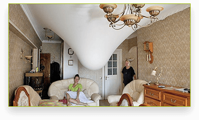
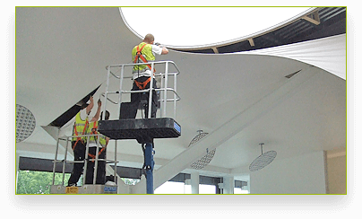

Чому вибирають нас?
Ми завжди прагнемо бути кращими і ближчими до клієнтів. За роки ми заробили гарну позитивну репутацію, але це нас не зупинило з кожним днем ми покращуємо якість наших послуг! Нижче тільки деякі причини чому обирають нас:
Якість і надійність
Вся наша техніка і матеріали проходять своєчасний технічний огляд і необхідне обслуговування.
Оптимальна вартість
Найкращі ціни на всі види стель тільки у нашій компанії!

Знижки!
Постійним клієнтам на всі наші стелі надається гнучка система знижок!

Оперативне обслуговування
Ми приїдемо до Вас на заміри на наступний день після замовлення!
Переваги

Вартість
У порівнянні з іншими стельовими покриттями, такими як штукатурка, гіпсокартонні конструкції, у натяжних стель найнижча ціна.

Довговічність
Стелі не вигоряють, не провисають, не тріскаються. Їх не потрібно підфарбовувати або подшпаклёвивать. Термін експлуатації - більше 20 років.

Не вимагає догляду
Без особливої потреби натяжні стелі не потребують догляду. Плівка не утримує на собі частинки пилу, так як вона абсолютно гладка.

Кольорова гама
Завдяки величезній кількості колірних відтінків - більше 180, кожен зможе підібрати колір стелі на свій смак.
Міцність
Можуть витримати до 100 літрів води на метр квадратний.
Час установкі
Швидкість монтажу натяжної стелі в рази швидше, ніж стелі з інших матеріалів.
Ціни на натяжні стелі у Львові

Глянцеві стелі від 200 грн./м.кв

Матові від 200 грн./м.кв

Двохрівневі від 500 грн./м.кв

Парящі від 500 грн./м.кв
Галерея наших робіт